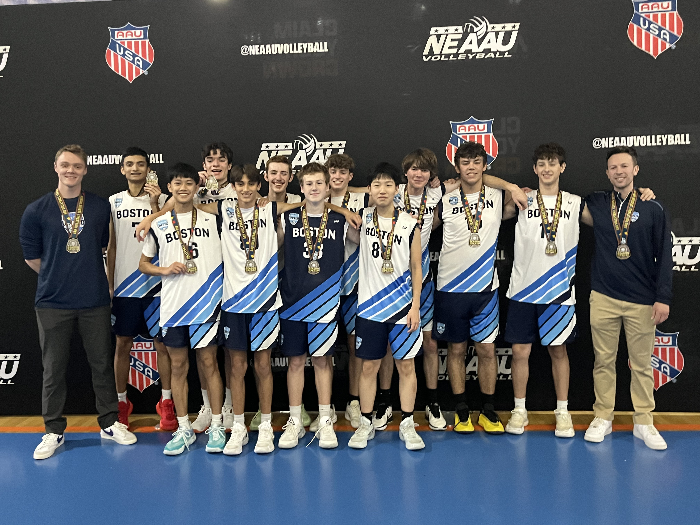

About Me
I build websites for people, take photos, and edit videos. Student at Lincoln Sudbury Regional High School, class of 2028.
A little about me
Hi! My name is Jonah Feinberg. I'm currently a student at Lincoln Sudbury Regional High School, class of 2028. I spend my time building websites, editing videos, playing volleyball, or walking my dog, Jasper.
I'm drawn to subjects that are intersected by people and how they function: psychology, sociology, and sometimes even computer science. I find it interesting how technology can shape behavior and how understanding people can make you a better builder.
I've had the opportunity to captain the JVA volleyball team as well as closely connect with many of my peers, which has taught me the importance of communication.
I value creativity, collaboration, and using my skills to help others. I'm interested in exploring psychology potentially alongside computer science to better understand how people think and how technology can be designed to serve them more effectively.

Boston United VolleyballI build websites
I design and build websites for people, personal sites, small businesses, portfolios, anything! Clean, cheap, fast, and built from scratch for your needs.
Featured
A typing speed test I built from scratch — mechanical keyboard sounds, leaderboards, and custom word lists.
Visit monkeyboard.jonahfeinberg.com →